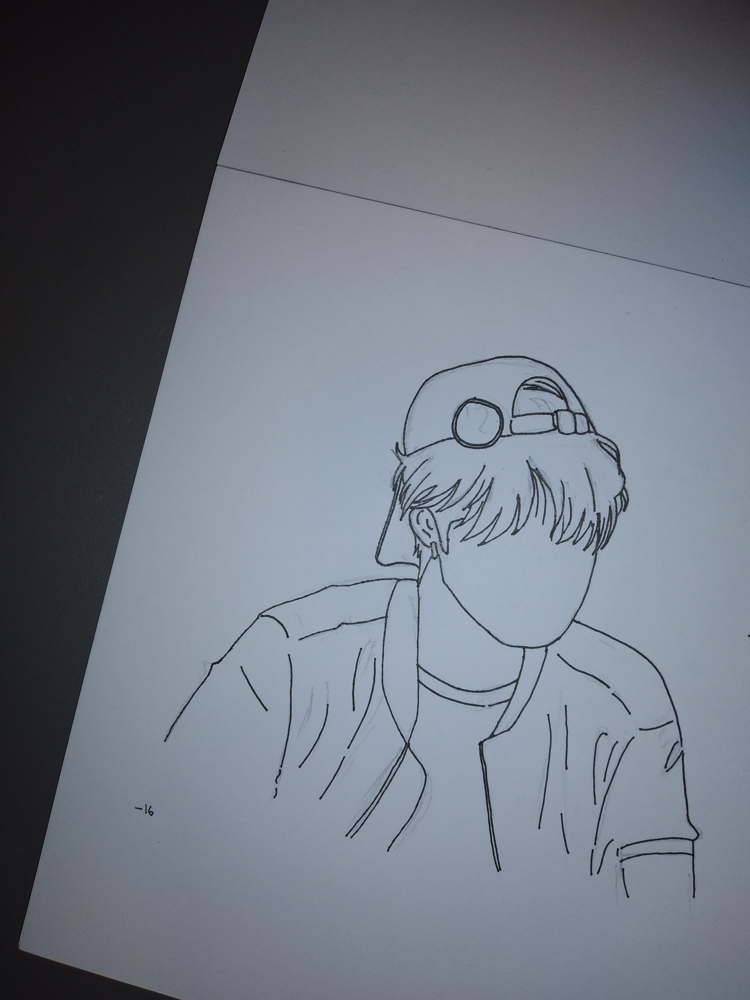
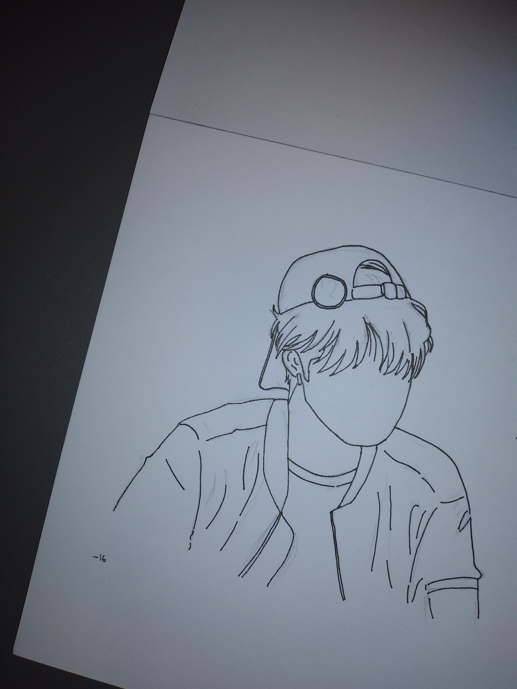

Nanditya Vianti Putri


Nama saya Nanditya Vianti Putri, asal Surakarta. Saya merupakan anak bungsu dari dua bersaudara. Saat ini tengah menempuh pendidikan S-1 di Program Studi Pendidikan Teknik Informatika dan Komputer, Fakultas Keguruan dan Ilmu Pendidikan, Universitas Sebelas Maret. Saya memiliki hobi menulis terutama journaling dan lettering. Saya gemar mencatat, maka dari itu dalam kegiatan berorganisasi saya kerap menjadi sekretaris. Selain itu saya juga memiliki hobi menggambar khususnya menggambar objek yang saya lihat. Saya memiliki ketertarikan di bidang pemrograman dan matematika, saat ini saya tengah berusaha untuk menekuni hal tersebut. Saya merupakan orang yang memiliki rasa keingintahuan tinggi, oleh karena itu saya selalu ingin mencoba untuk melakukan hal-hal baru yang belum pernah saya lakukan sebelumnya. Kemudian saya adalah orang yang terorganisir sebab saya selalu melakukan sesuatu dengan perencanaan dan tepat pada waktunya. Berikut dibawah ini biodata diri saya secara lebih lengkap.
Nama : Nanditya Vianti Putri
Tempat, tanggal lahir : Surakarta, 23 Juli 2003
Alamat : Kagokan, Pajang, Laweyan, Surakarta
Jenis Kelamin : Perempuan
Agama : Islam
Status : Mahasiswa
Kewarganegaraan : Indonesia
Pendidikan Teknik Informatika dan Komputer
2021 - sekarang
Menjadi mahasiswa di Program Studi Pendidikan Teknik Informatika dan Komputer, Fakultas Keguruan dan Ilmu Pendidikan, Universitas Sebelas Maret.
MIPA
2018 - 2021
Menjadi siswa di SMA Negeri 6 Surakarta dan menempuh pendidikan selama 3 tahun di jurusan MIPA.
2015 - 2018
Menjadi siswa di SMP Negeri 2 Surakarta dan menempuh pendidikan selama 3 tahun.
2009 - 2015
Menjadi siswa di SD Negeri Kleco 1 Surakarta dan menempuh pendidikan selama 6 tahun.
2007 - 2009
Menjadi siswa di TK Djama'atul Ikhwan Surakarta dan menempuh pendidikan dasar selama 2 tahun.
Staff Bendahara Umum
2022 - sekarang
Memegang jabatan sebagai Staff Bendahara Umum dan menjadi penanggung jawab dari program kerja RAB, serta melakukan beberapa program kerja lainnya.
Staff Biro Artistik
2021 - sekarang
Memegang jabatan sebagai Staff Biro Artistik, mengerjakan layouting pada produk Koran AK-47 dan Buletin Reflex, melakukan liputan, serta beberapa program kerja lainnya.
Koordinator Seksi Budi Pekerti
2019 - 2020
Memegang jabatan sebagai Koordinator Seksi Budi Pekerti di periode kedua masa jabatan kepengurusan OSIS sewaktu SMA. Disamping itu juga menjadi bagian panitia dari beberapa program kerja, beberapa diantaranya :
Seksi Ekstrakurikuler
2018 - 2019
Memegang jabatan sebagai Seksi Ekstrakurikuler di periode pertama masa jabatan kepengurusan OSIS sewaktu SMA. Disamping itu juga menjadi bagian panitia dari beberapa program kerja, beberapa diantaranya :
 |
Corel Draw |
| Photoshop | |
| Word, Excel, PPT | |
| Menggambar | |
| Manajemen waktu | |
| Komunikasi | |
| Pemecahan Masalah | |
| Kepemimpinan |

 
